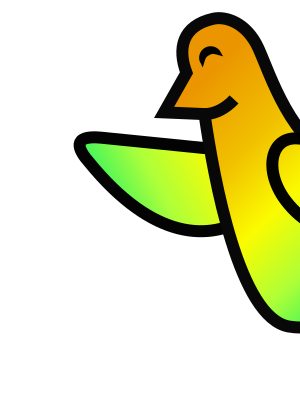

Tech skills in the AI era · 1/5

Tech skills in the AI era · 2/5
The part AI agents still struggle with
Tech skills in the AI era · 3/5
AI agents like Claude Code use them too.
Tech skills in the AI era · 4/5
fix the login bug
sends
your message + chat history + saved notes
replies
use tool: read login.ts
THE APP RUNS THE TOOL
sends
the file + the whole conversation so far
replies
here's the fix
The model only writes text. The app runs the tools and sends the chat history and saved notes with every message.
Tech skills in the AI era · 5/5
BIG SPEC UP FRONT
SMALL STEPS
find out what's wrong after every step
Ideas from XP and agile